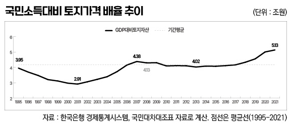
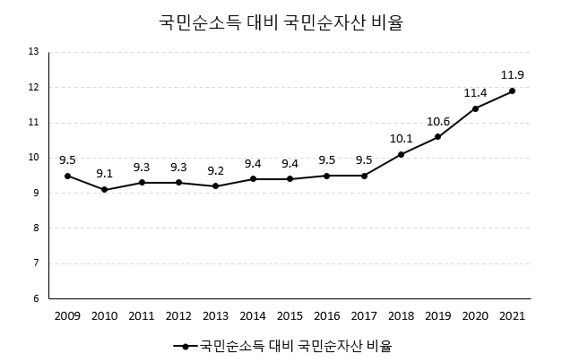
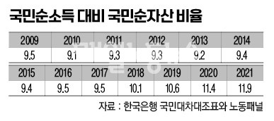

박영삼의 통계로 보는 노동
소득보다 빨리 증가하는 자본 축적, 원인은 토지가격
2021 피케티지수 11.9 … 토지·주택 가격 폭등으로 불평등 최고조
소득이 매년 새롭게 발생하고 소비되는 연중 기준 유량(flow)의 개념이라면 자산은 쌓이고 축적되는 연말 기준 저량(stock)의 개념이다. 개인과 가구의 소득과 자산은 가계금융복지조사에서 통계로 작성되며, 국민소득과 순자산은 국민계정과 국민대차대조표에서 집계된다.
지난해 7월 국민대차대조표에서 잠정집계된 2021년 기준 우리나라의 순자산은 1경9천809조원이다. 명목 국민총소득(GDP) 2천72조원의 9.6배에 해당한다. 현재 우리나라 국부의 가장 큰 비중을 차지하는 것은 토지자산이다. 부동산 자산이 1경6천873조원으로 국가 순자산의 85.2%를 차지하는데 토지자산이 전체 부동산 자산의 63%에 해당하는 1경680조원을 차지한다. 총 6천534조원에 이르는 주택자산 가치의 68%도 주거용 건물에 부속된 땅값이 좌우한다.
개인과 가구 차원에서 소득 대비 집값, 즉 주택가격배율(PIR) 개념이 있듯이 국가 수준에는 ‘국민소득 대비 토지가격 배율’ ’국민소득 대비 주택가격 배율’이 유용한 지표로 사용된다. 또한 전체 국민경제에서 국민순소득 대비 국민순자산의 배율을 나타내는 피케티지수도 비교 가능하다.
2014년부터 공표한 국민대차대조표 보니
한국은행과 통계청이 국민대차대조표를 공표하기 시작한 것은 2014년부터다. 다만 토지자산과 주택자산에 대해서는 1995년까지 소급연장된 추계 데이터를 확인할 수 있다. 이 글에서는 1995년 이후 토지자산과 주택시가총액이 명목 국민소득에 비해 어떻게 증가했는지 살펴보고 같은 시기에 작성된 노동패널의 임금과 가구소득 통계와 비교하고자 한다.
1995년 우리나라의 명목 GDP는 437조원이었고 토지자산은 1천725조원이었다. 국민소득 대비 지가총액 배율은 3.95배였다. 주택시가총액은 831조원으로 국민소득 대비 1.9배였다. 1998년 외환위기까지 겹치면서 2001년까지는 토지가격 배율이 2.91배까지 하락하는 모습을 보였다. 주택시가총액도 2001년 1.9배에서 1.6배로 하락했다. 국민소득과 자산가격이 동시에 정체·하락하는 시기였다.
그러나 2008년 세계 금융위기 발발 이전까지 토지가격배율은 급속도로 상승한다. 2006년에 4.15배를 넘어서 1995년 최고점을 갈아치우고 2007년에는 4.38배 수준까지 올랐다. 이후 다시 2011년까지 상승·하락 사이를 횡보하다가 2013년에는 4.02배 수준으로 다시 낮아지게 된다. 그러다가 2015년 이후 토지가격 총액은 가파른 상승세를 탄다. 2018~2021년까지는 폭등세를 기록했다. 이 시기 주택가격 총액도 동일한 흐름을 따라간다. 2015년 2.27배에서 2021년 3.14배에 이르기까지 주택가격은 거침없이 상승했다. 6년간 주택시가총액은 3천762조원에서 6천534조원으로 무려 2천772조원(73.7%) 폭등했다. 토지가격은 6천749조원에서 1경680조원을 넘어서는 58.2%의 증가율을 나타냈다.

성장보다 빠른 자본축적, 성장에 못 미치는 임금-소득
토지주택 가격배율이 반등하기 시작했던 2001년을 기준점(2001=100)으로 삼아 2021년까지 국민대차대조표의 주택시가총액과 토지가격, 노동자 평균임금, 가구평균소득지수 그래프, GDP와 함께 그려보면 <그림 2>와 같다. 그래프 상단에서는 토지와 주택가격이 줄곧 국민소득 증가분을 상회하는 반면 하단에서는 노동자의 임금이 2008년부터, 가구소득은 2009년부터 GDP 성장보다 하회한다. 전자는 경제성장을 초과하는 자본축적을, 후자는 성장에 못 미치는 소득과 임금 간의 간극을 의미한다.

한편 국민대차대조표에서 금융자산까지 포함한 국민순자산은 2009년부터 공표됐다. 이를 국민순소득으로 나눈 자본소득비율, 이른바 피케티지수(β)를 확인해 볼 수 있다. 피케티지수 역시 어느 시점에서 한 나라의 자본총량이 그 해 소득의 몇 년 치에 해당하는지를 측정하는 것인데 이 비율이 상승할수록 자본수익률이 소득증가율을 초과해 소득 불평등이 심화된다고 본다.
국민대차대조표의 통계로 계산한 국민순소득 대비 국민순자산 비율은 2009년 2013년 이후 지속 상승하는 추세인데 특히 2017년 이후 상승추세가 강하다. 이 흐름 역시 국민소득 대비 토지가격 비율 증가에 큰 영향을 받고 있다. 통상 피케티지수는 4~6 이상이면 심각한 상황이다.


다른 나라와 비교해도 마찬가지다. 경제협력개발기구(OECD) 국가들이 국민대차대조표를 단일한 기준에서 작성하고 있는 것은 아니지만 적어도 명목 국민소득 대비 토지가격 총액의 비율은 동일한 기준으로 비교할 수 있다. 가장 최근 자료인 2020년 기준으로 소득 대비 토지가격비율을 보면 △한국 5.0 △호주 3.7 △프랑스 3.5 △영국 3.0 △캐나다 2.37 △스웨덴 2.14 △네델란드 2.03 △독일 1.79 △체코 0.97 △핀란드 0.84로 나타난다. 모든 지표들이 일제히 나쁜 상태라고 말하고 있다.
고려대 노동문제연구소 노동데이터센터장 (youngsampk@gmail.com)